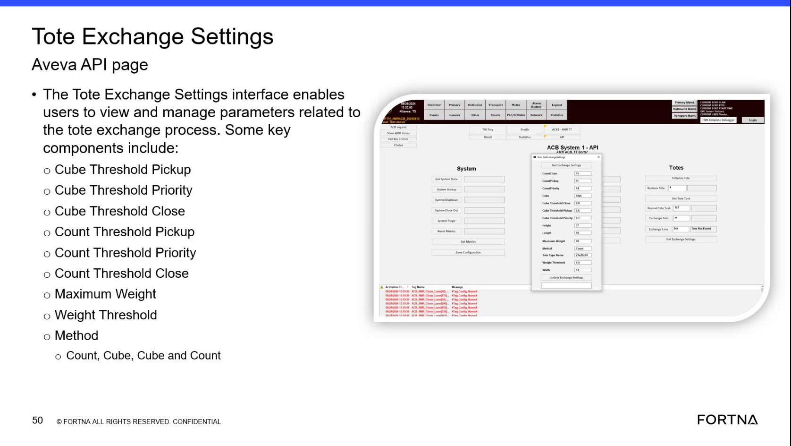

| Procedure ID | proc_verify_tote_exchange_settings_thresholds_and_method_on_aveva_hmi_v1 |
|---|---|
| Title | Verify Tote Exchange Settings Thresholds and Method on AVEVA HMI |
| Procedure Type | diagnostic |
| Primary Role | operator |
| Support Safe | Yes |
| Capability Tags | tote_exchange_sequence |
| Access Surface | aveva_hmi |
| Audience Roles | operator |
| Failure Pattern Tags | None |
| Validation Status | needs_sme_review |
| Merge Status | source_finalized |
On the AVEVA HMI Tote Exchange Settings page, verify the configured cube/count thresholds for Pickup, Priority, and Close, plus weight-related parameters (Maximum Weight, Weight Threshold) and the selected Method (Count, Cube, Cube and Count) so tote exchange behavior uses the correct evaluation logic.
Use when you need to confirm the active tote exchange configuration on the AVEVA HMI Tote Exchange Settings page—specifically the queue/pickup/priority/close thresholds for both Cube and Count, the weight-related parameters (Maximum Weight, Weight Threshold), and the selected evaluation Method (Count/Cube/Cube and Count).

Responsible role: operator
Instruction:
Using the AVEVA HMI interface, open the Tote Exchange Settings screen (Tote Exchange Settings interface).
Expected result:
The AVEVA HMI Tote Exchange Settings page is displayed with fields for Cube Threshold Pickup/Priority/Close, Count Threshold Pickup/Priority/Close, Maximum Weight, Weight Threshold, and a Method field.
Responsible role: operator
Instruction:
On the AVEVA HMI Tote Exchange Settings page, locate and review the Cube threshold fields: Cube Threshold Pickup, Cube Threshold Priority, and Cube Threshold Close.
Expected result:
Cube Threshold Pickup, Cube Threshold Priority, and Cube Threshold Close are populated with valid values (not blank/invalid).
Stop or Escalate If:
Responsible role: operator
Instruction:
On the AVEVA HMI Tote Exchange Settings page, locate and review the Count threshold fields: Count Threshold Pickup, Count Threshold Priority, and Count Threshold Close.
Expected result:
Count Threshold Pickup, Count Threshold Priority, and Count Threshold Close are populated with valid values (not blank/invalid).
Stop or Escalate If:
Responsible role: operator
Instruction:
On the AVEVA HMI Tote Exchange Settings page, locate and review the weight-related fields: Maximum Weight and Weight Threshold.
Expected result:
Maximum Weight and Weight Threshold are populated with valid values (not blank/invalid).
Stop or Escalate If:
Responsible role: operator
Instruction:
On the AVEVA HMI Tote Exchange Settings page, locate the Method field and confirm it is set to one of the available options: Count, Cube, or Cube and Count.
Expected result:
Method is set to Count, Cube, or Cube and Count (not blank/undefined).
Stop or Escalate If:
Responsible role: operator
Instruction:
Compare the displayed Cube Threshold Pickup/Priority/Close, Count Threshold Pickup/Priority/Close, Maximum Weight/Weight Threshold, and Method selection against the expected tote exchange configuration for the active project/UAT-finalized settings. If values are consistent, stop; otherwise escalate for configuration correction.
Expected result:
All displayed threshold/weight fields and the Method selection match the expected configuration for the active project/UAT-finalized settings.
Stop or Escalate If: